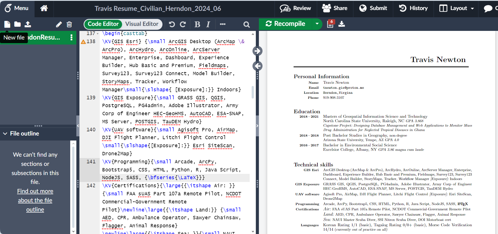
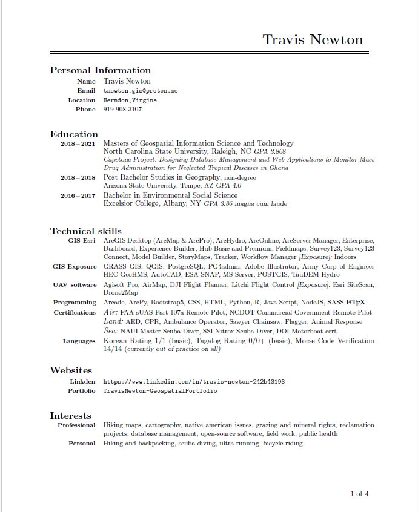

NASA Mentorship
2025-01-29
House keeeping
- Wait tell end of slide to ask questions (not presentation)
- One presentation
- Will stop on slide-“N” when close to time, pick up again next round
- Reach out with questions
- Masters not a PhD
- I’m approachable
- Currently activated with FEMA at GA JFO
- If over 3min late, send me a text…
Are you coming today?
- If over 3min late, send me a text…

About Me
From
- Pacific Northwest (PNW)
- Resettled East Coast (NC, VA, GA)
- DEVELOP’R Summer 2020 (covid remote)
Jobs
- Full Time
- U.S.Army
- Esri
- DOD
- Internship
- Global Trek Adventures
- DEVELOP
- Esri
- Seasonal / On-Demand
- NPS
- USFS
- FEMA Reserves

About You
Tell me about yourself
Degree?
Where you from (country, state, city)?
Do you have any special skills (eagle scout, baseball player, etc)
Describe your project?
What are your ambitions after DEVELOP?
How will DEVELOP get you where you need to go?

Elevator Pitch
These questions can help you with an elevator pitch for your time at NASA
My DEVELOP
In STEM, its easy to go with what you know…..academic studies.
- Issues
- Choose Model Builder as initial push to circumvent the code review
Use code 100x faster
- Tried to go to big (10-20yr study)
- Wasted time on projections, datum, study area
- Did not properly identify objective: Evergreen loss vs Hemlock detection
- A customers who gets a free gift bag care not what they get
Leads to ambitiousness, ambiguous, and/or lackadaisical objectives
- Choose Model Builder as initial push to circumvent the code review

My DEVELOP - Do over
Ask…..What spatial projects can you not accomplish right now due to supervisor disinterest or budget?
- R/SF or Python/Esri (agency/country dependent)
- Single focus (water, tree, landslide, etc)….
Be Generic - Use a GIT repository
- When in doubt (google, stackoverflow, NASA library)
Design
R
Esri
Code (r script)
Showcase Results (shiny app)
Presentations (quartro = powerpoint and revealJS)
Reports: (quartro = microsoft word)
Poster: (markdown = posterdown)
Code (vs script, spyder, juypter)
Showcase Results (eb or hub)
Presentations (powerpoint)
Reports: (microsoft word)
Poster: (powerpoint, adobe)

My DEVELOP - R
- Divide and Conquer
- Data (tidyverse) = everyone
- Reports (quarto/markdown)
- Plots (ggplot2 and plotly)
- Maps (sf, leaflet)
- Shiny App (bslib, html, css)
Cartography
Don’t worry about cartography. DEVELOP conducts studies of natural/human science phenomenon using EOS. Simple maps with associated graphs and tables or an interactive app are better.

Networking
- Why is it important?
- references
- dial a friend for help
- job opportunities
- Where to network
- Linkden (Only field related)
- GIS related groups (Mappy Hours)
- Conferences
Conferences
Can you build a portfolio website with QR code and add it to a paper business card?

Changing Career Path
Are you coming into GIS. Why? Are you leaving GIS? Why?
- Can you afford it? $52 an hour to $18
- Don’t focus on the Where (USGS), focus on the What (Water reclamation)
- What will make you happier then the Where
Combine a Sabbatical and Job
- NPS
- Collect inside information to design entire suite of apps
- Be in nature, hike, and help people as SAR
- USFS
- Fire lookout allows time for research
- Learn new skills (html, css, js, bootstrap, r)
- Put field lessons learned to work (part 4 discussions)


Changing Career Paths
Army -> GIS –> Outdoors —> GIS
- Cubical life burn out
- Came from an outdoor background
- Best suited for a hybrid of field & office
- What does this look like?
- Field collection and processing
- Examples
- Ft.Lewis Natural Resource - UAV, FM
- Arlington Cemetery - FM, Survey
- FBI - UAV, LIDAR
- BIE - Professor, FM,Survey
- Examples
- Field collection and processing

Resumes
- Resume builder
- Federal vs Civilian
- Requires:
location, duty title, hours, salary
- Requires:
- Generic Resume and Cover Letter
- www.overleaf.com uses LATEX
- tailor the cover letter to the job
- Federal vs Civilian
- Hiring clinchers
- Personal portfolio website
- Showcased project (active website or on github)
- Technical paper or college paper (github)



Portfolio
- Quickly setup
- wordpress, weebly
- Esri
- Storymap, Experience Builder
- ArcGIS Assistant
- https://assistant.esri-ps.com/signin
- Copy your code to a notepad for new enviro
- Build your own
- HTML, CSS, Bootstrap, JS, NodeJS, SASS
- R: Shiny, Blogdown
- BSlib: bootstrap equivalent


Project Ideas - App
Think about all your steps for a wholestic system
Data collection and cleaning for GIS
Map infusion (digital, analog)
Display Analytically "the So What"Esri
Fieldmaps, quickcapture, survey123
Python or R (code, desktop gptool) - Automated?
Dashboard, EB
Symposium poster (no storymaps)
Example
- # of bridges, % of roads, $ of damage (totals and per county)

Academia
- Coursework helps guide career path
- Helpful Coursework
- Scientific/ Research
- Spatial Analytics, Rasters, Coding (Statistical)
- GIS Specialist / Technician
- Database, Coding (Automating), AGOL Apps, ArcPro
- Scientific/ Research
- Don’t jump ahead or take erroneous courses (UAV)(Hydro GIS)
- Undergrad(2yr) - PBS(8m) - Grad(3yr)
- I focused PBS on GIS, Geography, Geology
- Would have focused GIS, Python, Stats or Math

Career Path Advice
- Unknown direction?…tailor coursework to be generic (NCSU does well)
- Specialize once you get to your job. (OJT)
Before you land your job what do you do?
- Internships greatly help
- Volunteer while applying to jobs
- URISA, PeaceCorp (federal placement)
- Build a GIS portfolio
- Pick a passion project to showcase